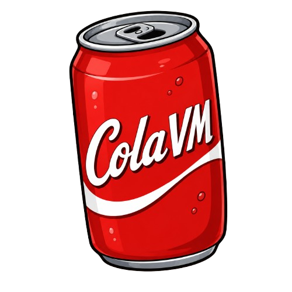

A stack-based virtual machine ecosystem
Introduction
ColaVM suite is a lightweight stack-based virtual machine ecosystem with a custom ISA which aims to compile and run compact-sized binaries.
ColaVM is inspired by the Java Virtual Machine (JVM) and is written in Rust.
Examples
Hello World
This simple program prints "Hello, World!".
PRINT "Hello, World!"
The output can (compiled binary) is 15 bytes in size.
FizzBuzz
A classic FizzBuzz program (prints "Fizz" on a multiple of 3, "Buzz" on a multiple of 5 and "FizzBuzz" on a multiple of 15)
View code here!
The output can (compiled binary) is 85 bytes in size.